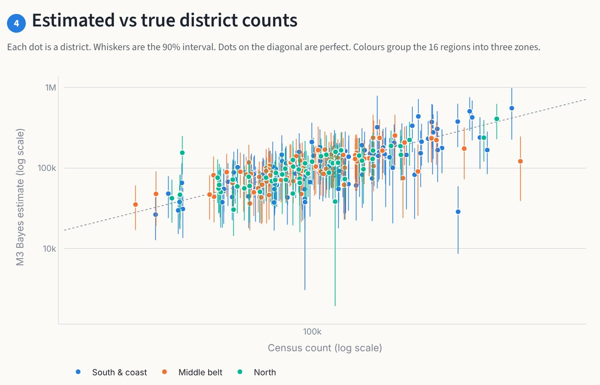

Question
Given only Ghana's 16 regional population totals, how well can five models rebuild where people live on a 100 m grid, and are their uncertainty bands honest? Every model is scored against the real 2021 census count in all 260 districts.
Data
Ghana Statistical Service 2021 Population and Housing Census district and region totals, and district boundaries, via UNFPA/OCHA on HDX (CC BY-IGO); Google Open Buildings v3 footprints, 11.0 million buildings (CC BY 4.0); WorldPop Global2 covariates at 100 m (built-up surface, distance to roads and water, night-time lights, elevation, slope, land cover) and WorldPop's own estimate as a labelled benchmark (CC BY 4.0).
Method
- Two scenarios: A gives the models only the 16 region totals; B also gives the true counts of a random half of the districts and scores the other half.
- M0 spreads people evenly over settled cells; M1 by building footprint area; M2 with a random forest, WorldPop-style; M3 is a Bayesian hierarchical model in PyMC with a BYM2 spatial effect and 90% intervals; M4 cross-checks M3 in R-INLA.
- Every model and every posterior draw adds up exactly to the region totals. Calibration is checked at 50% and 90%, and a leave-one-region-out check hides each region in turn.
Main results
With region totals only, the Bayesian model M3 has a median district error of 21.7% (M4 20.7%), against 35.7% for an even spread, and its 90% band holds the true count in 91.9% of districts. With half the districts known, the random forest is best (13.6%) and M3 reaches 15.3%. PyMC and R-INLA agree closely (correlation of district estimates 0.988). An honest twist: a plain building-count rule reaches 15.9% in scenario A, better than M3; with only 16 numbers to learn from, the Bayesian model's value is calibrated uncertainty rather than accuracy.
What you can explore
Model, scenario, map layer (estimate, uncertainty width or error against the census) and region; the national map; 100 m zooms of Accra, Kumasi and Tamale; the scorecard; estimates against census counts; calibration; the two engines compared; what drives density; the ten worst districts with likely reasons; and a planning view of district intervals.
Caveats
- The census counts people where they slept on census night; buildings are not homes; footprints date from about 2023.
- WorldPop's benchmark was fitted with district census data, so it is a reference line, not a fair competitor. Portfolio demo, not affiliated with any data provider.
